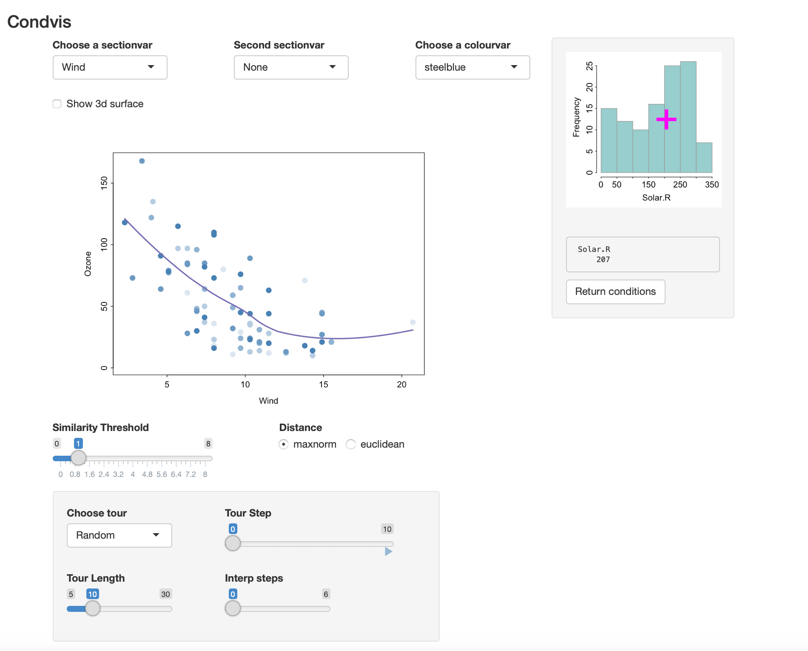
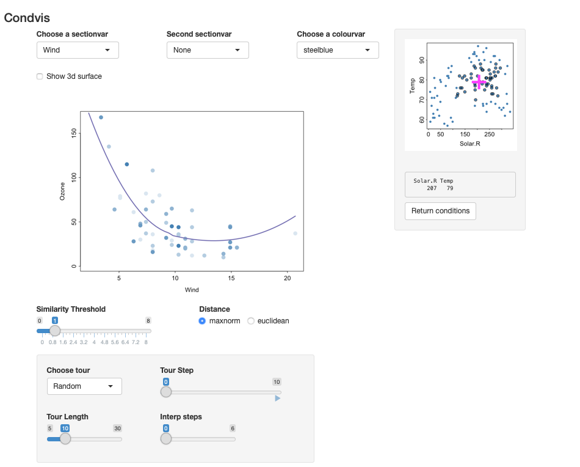
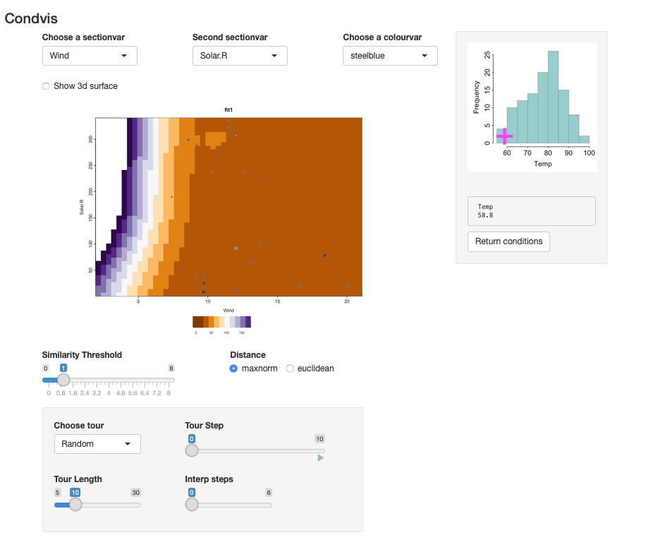
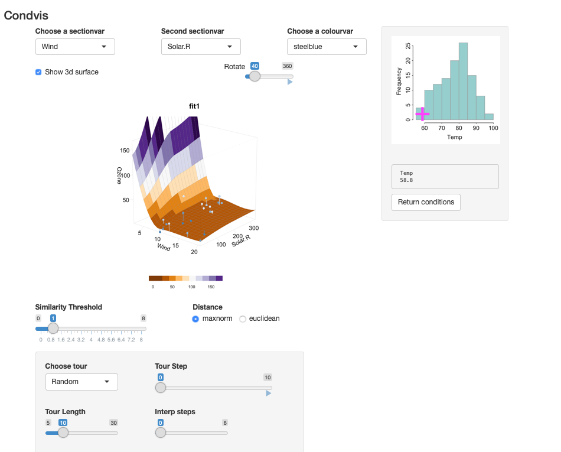
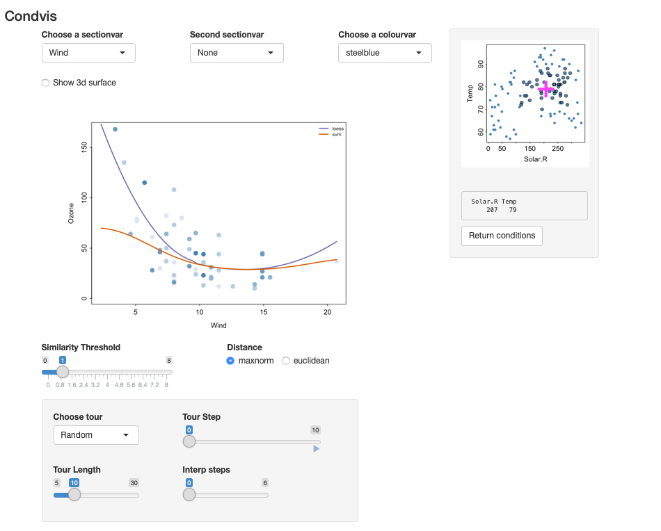
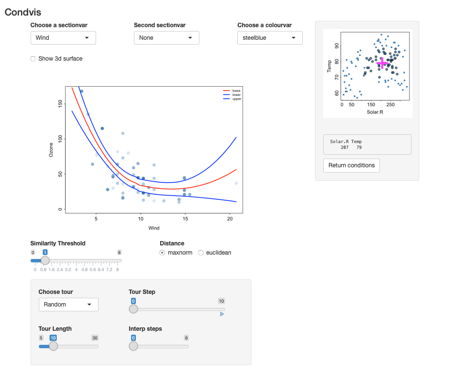
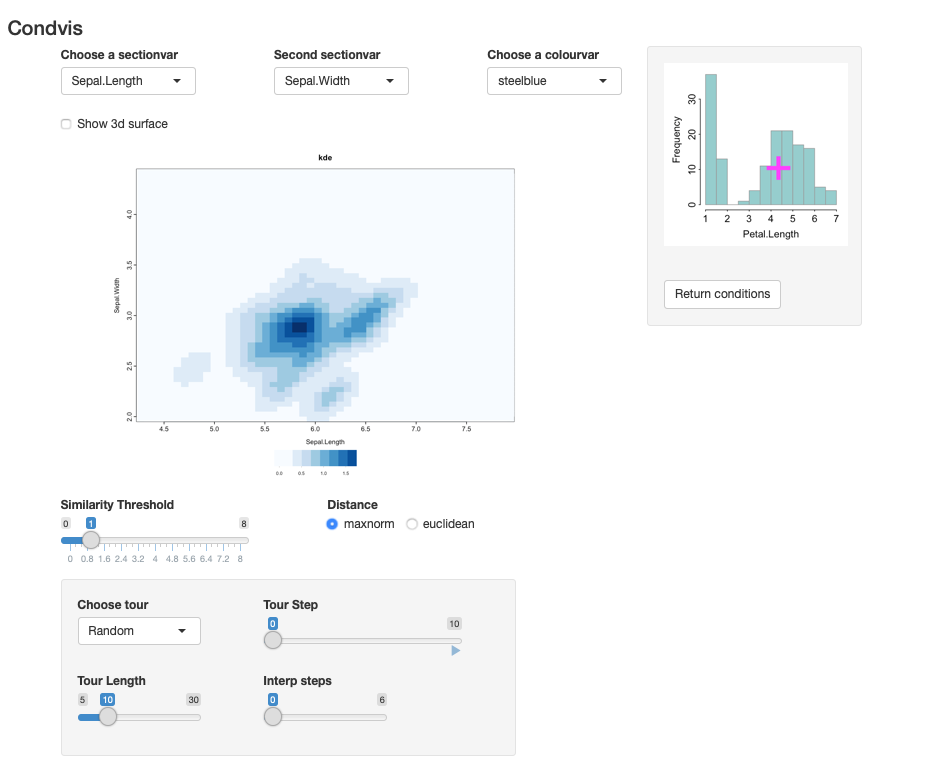

Introduction to condvis2
Catherine B. Hurley
2021-05-20
Source:vignettes/introduction.Rmd
introduction.RmdThis vignette is an introduction to condvis2. This package constructs shiny-based interactive visualisations of prediction models.
Ozone data
We will use the airquality data built in to R.
ozone <- na.omit(airquality)The first fit we consider uses Wind only to predict ozone. Here we construct the fit and plot the results.
fit1 <- loess(Ozone~Wind, data=ozone)
plot(Ozone~Wind, data=ozone, xlim=c(1.5, 21), ylim=c(-5,175))
wind <- seq(min(ozone$Wind), max(ozone$Wind), length.out=30)
lines(wind, predict(fit1, data.frame(Wind=wind)))
If we add in a second predictor, we can either move to plotting the surface, or plot how the fit relates to one predictor, for a fixed value of another.
fit2 <- loess(Ozone~Wind+Solar.R, data=ozone)
par(mfrow=c(1,3))
par(mar=c(5,5,3,1))
for (s in quantile(ozone$Solar.R, c(.25,.5,.75))){
plot(Ozone~Wind, data=subset(ozone, Solar.R <= s+20 & Solar.R >= s-20),
xlim=c(1.5, 21),ylim=c(-5,175), main=paste0("Solar.R=",s))
lines(wind, predict(fit2, data.frame(Wind=wind, Solar.R= s)))
}Notice in the above plots we are only plotting observations where Solar.R values are close to the value used for prediction.
These plots can be constructed interactively in condvis2:
suppressMessages(library(condvis2))
condvis(ozone, fit2,sectionvars="Wind", conditionvars="Solar.R")This gives the following display:

- The histogram on the right shows the values for Solar.R.
- The selected value of Solar.R is 207. By clicking on the histogram, you can change this selection.
- The main display (on the left) shows the predicted values of Ozone, varying Wind and fixing Solar.R at \(f_2 =207\).
- Only observations which have Solar.R values near 207 are shown,i.e., observations whose \(d_i = |x_{i,2} - f_2|<1\), where Solar.R values are measured in standard units.
- The nearness required can be increased or decreased from 1 by moving the Similarity Threshold slider.
- Also, point colours fade to reflect the distances \(d_i\), so points very near or on the section are dark blue, with colour fading as distance increases.
- You can exchange the roles of Solar.R and Wind by choosing Solar.R in the
Choose a sectionvarmenu.
In this way we can see how well the curve fits to observations in its section.
If we include another predictor in the fit
fit3 <- loess(Ozone~Wind+Solar.R+Temp, data=ozone)and invoke condvis
the result is shown in the screenshot below.

- The plot on the right shows the values for Solar.R and Temp. By clicking on this plot, you can change the selected values.
- The main display (on the left) shows the predicted values of Ozone, varying Wind and fixing Solar.R and Temp.
- Only observations which have Solar.R and Temp values near the pink cross are shown.The distance is calculated as \[ d_i = max(|x_{i,2} - f_2|, |x_{i,3} - f_3|)<1,\] where \(f_2\) and \(f_3\) are the fixed values of Solar.R and Temp, and \((x_{i,2}, x_{i,3})\) are the observation coordinates (all standardised).
- Again, point colours fade to reflect the distances \(d_i\).
- The plot on the right shows all the observations, but points near the pink cross (those visible in the main plot) are slightly larger with a dark outline.
Two section variables
You can also pick a second section variable, to see how the fitted surface looks as a function of two variables, while the third is modified interactively.
 The image shows fitted surface levels as a function of two predictors. The points shown are near the fixed conditioning values. For an image plot, the point colour represents the observed response, coloured in the same way as the fitted surface. Here we convey the distance of an observations condition values to the fixed condition levels by size. You will see some points in the main display whose colour does not match the image colour, for example, the two darker points around Wind=10, with low Solar.R. As the points are large, they are near the conditioning values which are poorly fit.
There is very little data at low Temp, and none of these observations have a Wind value below 7. So the steep incline at the left hand side of the main plot is not supported by the data. Prediction in this area is extrapolation.

Alternatively, the relationship between Ozone and (Wind, Solar.R) for fixed Temp may be displayed as a 3-d surface. The points near the selected value of Temp are dark blue, lightening in colour as the distance increases. The residual sizes are shown via line segments.
Comparing two fits
We could fit a second fit to the same data and compare the results.
library(e1071)
fit4 <- svm(Ozone~Wind+Solar.R+Temp, data=ozone)
condvis(ozone, list(loess=fit3,svm=fit4), sectionvars="Wind", conditionvars=c("Solar.R", "Temp"))
We see big differences between the fits, especially for low Wind.
Note: condvis uses CVpredict to extract predictions from fitted models. By default CVpredict uses predict, but there are customised versions of CVpredict for many fit types. (See the help page.)
Confidence intervals
Condvis2 supports confidence intervals, for fits that offer them.
Use
fit5 <- lm(Ozone~Wind+Solar.R+Temp, data=ozone)
condvis(ozone, fit5,
sectionvars="Wind", conditionvars=c("Solar.R", "Temp"), predictArgs=list(list(pinterval="confidence")))The loess fit does not provide confidence intervals but it does offer standard errors, which can be used for confidence bounds:
fitu <- fit3
class(fitu)<- c("upper", class(fitu))
CVpredict.upper <- function(f, newdata, ...){
p <- predict(f, newdata, se=T)
p$fit+ 2*p$se.fit
}
fitl <- fit3
class(fitl)<- c("lower", class(fitu))
CVpredict.lower <- function(f, newdata, ...){
p <- predict(f, newdata, se=T)
p$fit- 2*p$se.fit
}
condvis(ozone, list(loess=fit3,lower=fitl,upper=fitu),
sectionvars="Wind", conditionvars=c("Solar.R", "Temp"),
linecols=c("red", "blue","blue"))
Tour controls
As the conditioning dimension increases, it might be easier to view sections that are automatically chosen. The tour controls offer various controls.
- The simplest method chooses random observations in conditioning space to form the sections.
- Click on the arrow below
Tour Stepto watch. - You can increase the number of random points via the
Tour Lengthslider. - If you want a smoother appearance to the tour, increase
Interp stepsfrom 0.
Example : A density estimate
library(ks)
data(iris)
irisf <- kde(x=iris[,1:3])
condvis(data = iris, model = list(kde=irisf),
sectionvars= c("Sepal.Length", "Sepal.Width"),
conditionvars= "Petal.Length", density=T)The result is shown in the screenshot below. It shows the estimated density of two variables conditional on the third.

References
Catherine B. Hurley, Mark O’Connell, Katarina Domijan. (2021) Interactive slice visualization for exploring machine learning models. arXiv 2101.06986.
Mark O’Connell, Catherine Hurley, Katarina Domijan. (2017) Conditional Visualization for Statistical Models: An Introduction to the condvis Package in R. Journal of Statistical Software 81(5) 1–20.